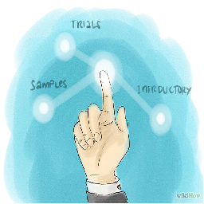

-
Become an expert in your market
Conduct research about your target market. You can look up information online or at a library, or you can conduct your own experiments by polling members of your target market or giving them samples to try and review.
Make sure to consider what your target market should be. Certain demographics to consider include age, gender, education level, location, interests, ethnicity, and sexual orientation.
-
Perfect your product for the market
Once you have some feedback about your product and more information about your target market, make any changes that seem appropriate to perfect it for your market.
Remember that while you will get widely differing opinions, if there are common criticisms of your product, they are probably correct and should be addressed.
-
Determine your startup budget
Think about how much money you will have to market your product in the beginning. This will determine what type of marketing you do and sometimes what strategy you use.
-
Develop sales goals
You will need to determine how much of your product at what price will need to sell in order to keep your business afloat. This is very, very important. Balancing this will be tricky and it may take some time to figure out the right formula.
-
Develop a sales plan

This is when you will need to write out and specify your sales timeline, target market needs, priorities, objectives, challenges, how you will acquire new business, and how you will grow your existing business. A sales plan will be necessary if you want investors to consider your product.
-
Choose a strategy to succeed
There are a number of different ways you can market your product, or different approaches in who you market to and what aspect of people you appeal to in your marketing. These strategies can bring you widely different customers or they can help you soar with a specific set of people.
Consider a concentrated marketing strategy. This is when your marketing appeals to and is targeted at only your target market. This is commonly seen with luxury items, which get marketed to very specific parts of a population, but can also be seen in other areas as well. Think Teen Magazine.
Consider an undifferentiated marketing strategy. This is when your marketing appeals to and is targeted at pretty much everybody, and certainly a very broad audience. This strategy works well when you have a product which is broadly useful or appealing. Usually this means the traditional marketing mediums: television ads, print ads, and billboards for example.
Consider a differentiated marketing strategy. This is when your marketing takes different aspects of your product and markets it to different demographics. Use the price, for example, to market to customers with a limited budget who may be looking for something less costly than your competitor’s products. Meanwhile, use convenience to make your product appeal to a local market.
-
Seed your market
Give samples, trials, or introductory sales to show your customer base why they want your product. You can do this by handing out samples outside your store, or finding a complementary business with whom your product can be paired with for short run, among a number of other ways. This will help build your initial business base and is very important.
Continue to test your marketing strategy as you go through this initial phase, to ensure that you are taking the right approach for your market.
-
Expand your market
Once you’ve had a certain measure of success and you feel your product is ready, you can expand your market by getting your product into major retailers. You will want to consider where you should sell (Walmart, etc.). Following the advice in the Serious Success section will be very important, as stores will not want to carry your product if they feel you are unprepared to handle the volume.